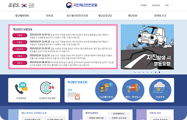
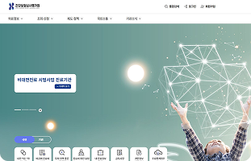

개념 학습
정보 공유의 개념과 가치
공공 정보 플랫폼
공공 정보 플랫폼은 시민의 안전과 편의를 위해 정보를 제공하며, 사용자는 이러한 데이터를 활용해 재난 대비, 생활 안전, 교통안전 등을 높일 수 있다.
-
국민재난안전포털국민재난안전포털은 실시간 재난(태풍, 홍수 등) 경보, 재난 발생 시 대피소 위치, 각종 안전 수칙과 행동 요령 등의 정보를 제공한다.
-
건강보험심사평가원건강보험심사평가원은 병원 · 약국 찾기, 내가 처방받은 약의 내역 및 나의 의약품 알레르기 · 부작용 등의 정보를 제공한다.
정보 공유는 정보를 보유한 개인, 조직 또는 시스템이 다른 사람이나 그룹에게 정보를 알리거나 나누는 것을 말한다. 정보 공유는 편리함을 제공하는 서비스를 만들고 새로운 일자리를 창출하고 사회의 투명성을 높이는 데 기여하고 있다.
정보 공유의 가치
-
정보를 공유하면 더 많은 사람들이 필요한 지식을 얻고 활용할 수 있다.지식과 정보의 확산
-
사람들 간의 소통을 원활하게 하고 협력을 강화하여 공동 목표를 달성하는 데 도움을 준다.협력과 연결성 강화
-
문제를 더욱 빠르고 정확하게 이해하는 데 도움을 주며, 다양한 관점에서 해결책을 찾는 데 기여한다.문제 해결의 효율성 증대
-
다양한 정보와 아이디어를 공유하면 새로운 시각이 더해져 창의적인 해결책이나 발전적인 아이디어가 나올 가능성이 높아진다.혁신과 발전 촉진
-
중복된 연구나 작업을 방지하여 자원을 절약하고, 필요한 데이터를 얻는 데 드는 시간과 비용을 줄일 수 있다.비용과 시간 절감